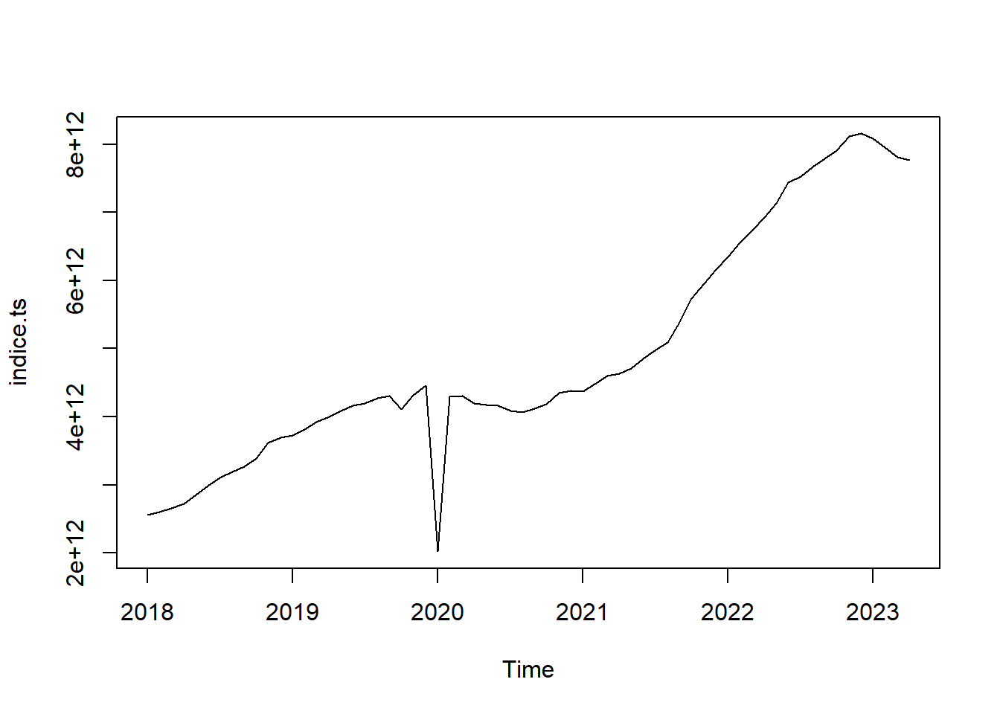
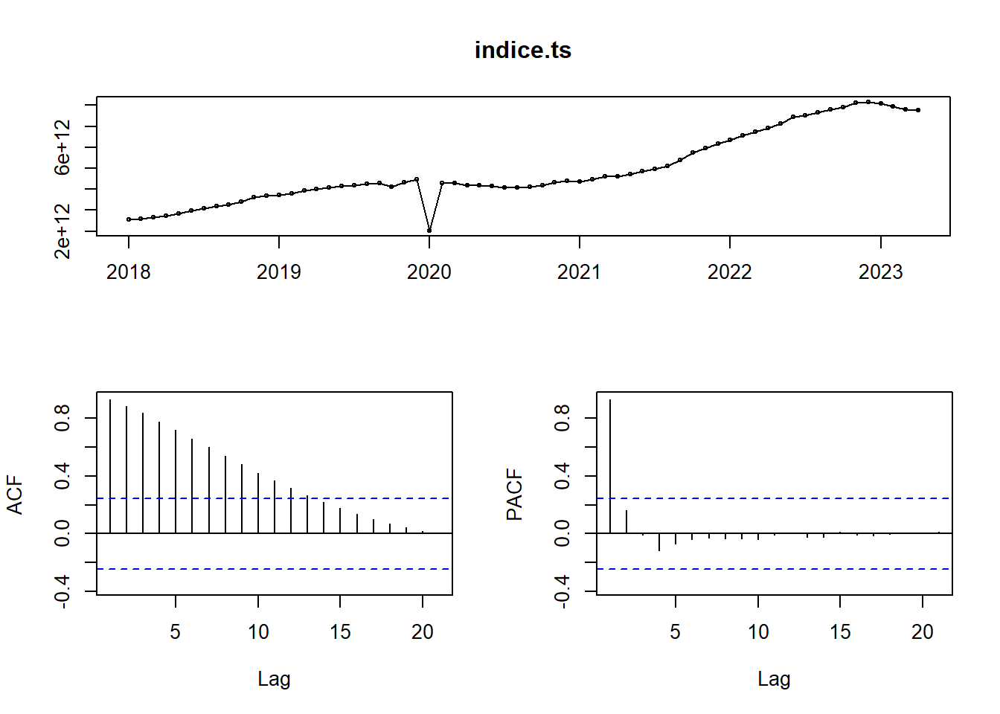
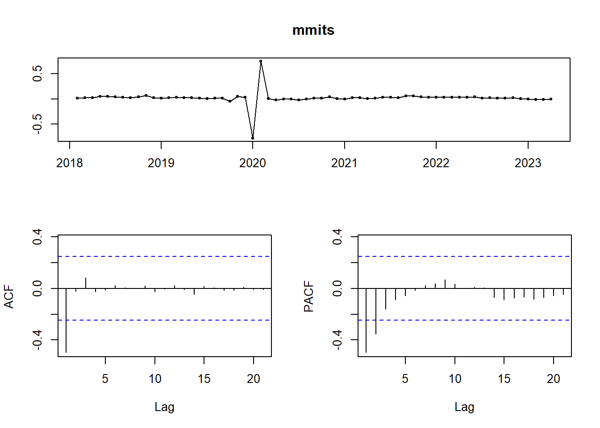
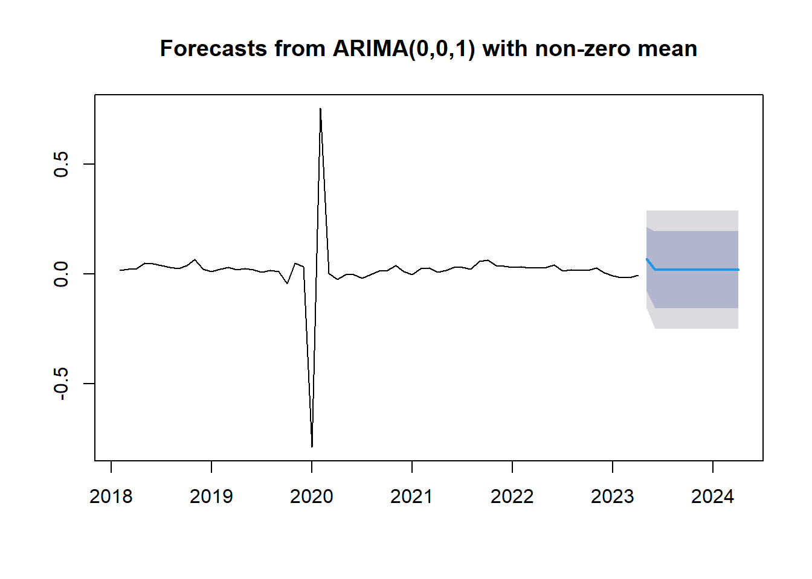
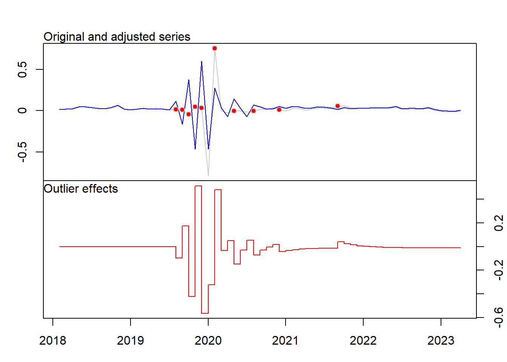

Capitulo 7 Modelo con Pruebas de diferenciacion log para ARIMA
Metodología Box-Jenkins para identificar modelos autoregresivos integrados de media móvil (ARIMA) para analizar y predecir valores futuros de serie de tiempo.

##
## Augmented Dickey-Fuller Test
##
## data: indice.ts
## Dickey-Fuller = -1.2017, Lag order = 3, p-value = 0.8984
## alternative hypothesis: stationary##
## Augmented Dickey-Fuller Test
##
## data: mits
## Dickey-Fuller = -1.9544, Lag order = 3, p-value = 0.5934
## alternative hypothesis: stationary##
## Augmented Dickey-Fuller Test
##
## data: mmits
## Dickey-Fuller = -5.3844, Lag order = 3, p-value = 0.01
## alternative hypothesis: stationary
##
## Augmented Dickey-Fuller Test
##
## data: mmits
## Dickey-Fuller = -5.3844, Lag order = 3, p-value = 0.01
## alternative hypothesis: stationary##
## ARIMA(2,0,2)(1,0,1)[12] with non-zero mean : Inf
## ARIMA(0,0,0) with non-zero mean : -65.53048
## ARIMA(1,0,0)(1,0,0)[12] with non-zero mean : -78.58046
## ARIMA(0,0,1)(0,0,1)[12] with non-zero mean : -88.02136
## ARIMA(0,0,0) with zero mean : -66.66478
## ARIMA(0,0,1) with non-zero mean : -90.27983
## ARIMA(0,0,1)(1,0,0)[12] with non-zero mean : -88.01915
## ARIMA(0,0,1)(1,0,1)[12] with non-zero mean : Inf
## ARIMA(1,0,1) with non-zero mean : -88.46913
## ARIMA(0,0,2) with non-zero mean : -88.62053
## ARIMA(1,0,0) with non-zero mean : -80.81767
## ARIMA(1,0,2) with non-zero mean : -86.98859
## ARIMA(0,0,1) with zero mean : -83.77733
##
## Best model: ARIMA(0,0,1) with non-zero mean## Series: mmits
## ARIMA(0,0,1) with non-zero mean
##
## Coefficients:
## ma1 mean
## -0.6742 0.0182
## s.e. 0.0846 0.0047
##
## sigma^2 = 0.01291: log likelihood = 48.34
## AIC=-90.69 AICc=-90.28 BIC=-84.26## Point Forecast Lo 80 Hi 80 Lo 95 Hi 95
## May 2023 0.06780752 -0.07779118 0.2134062 -0.1548665 0.2904815
## Jun 2023 0.01815148 -0.15744629 0.1937492 -0.2504021 0.2867051
## Jul 2023 0.01815148 -0.15744629 0.1937492 -0.2504021 0.2867051
## Aug 2023 0.01815148 -0.15744629 0.1937492 -0.2504021 0.2867051
## Sep 2023 0.01815148 -0.15744629 0.1937492 -0.2504021 0.2867051
## Oct 2023 0.01815148 -0.15744629 0.1937492 -0.2504021 0.2867051
## Nov 2023 0.01815148 -0.15744629 0.1937492 -0.2504021 0.2867051
## Dec 2023 0.01815148 -0.15744629 0.1937492 -0.2504021 0.2867051
## Jan 2024 0.01815148 -0.15744629 0.1937492 -0.2504021 0.2867051
## Feb 2024 0.01815148 -0.15744629 0.1937492 -0.2504021 0.2867051
## Mar 2024 0.01815148 -0.15744629 0.1937492 -0.2504021 0.2867051
## Apr 2024 0.01815148 -0.15744629 0.1937492 -0.2504021 0.2867051
## Series: mmits
## Regression with ARIMA(2,0,0) errors
##
## Coefficients:
## ar1 ar2 intercept TC19 LS20 TC21 AO22 TC23
## -1.4393 -0.6456 0.0292 -0.0961 0.2422 -0.6172 0.7346 -0.4820
## s.e. 0.0981 0.0953 0.0038 0.0226 0.0286 0.0719 0.0863 0.0285
## AO25 TC28 LS31 LS35 TC44
## 0.6319 -0.2536 -0.180 -0.0733 0.0521
## s.e. 0.0492 0.0384 0.022 0.0130 0.0145
##
## sigma^2 = 0.002827: log likelihood = 101.48
## AIC=-174.96 AICc=-166.21 BIC=-144.96
##
## Outliers:
## type ind time coefhat tstat
## 1 TC 19 2019:08 -0.09610 -4.262
## 2 LS 20 2019:09 0.24224 8.461
## 3 TC 21 2019:10 -0.61716 -8.580
## 4 AO 22 2019:11 0.73456 8.516
## 5 TC 23 2019:12 -0.48196 -16.888
## 6 AO 25 2020:02 0.63191 12.842
## 7 TC 28 2020:05 -0.25360 -6.606
## 8 LS 31 2020:08 -0.17998 -8.190
## 9 LS 35 2020:12 -0.07327 -5.620
## 10 TC 44 2021:09 0.05214 3.608